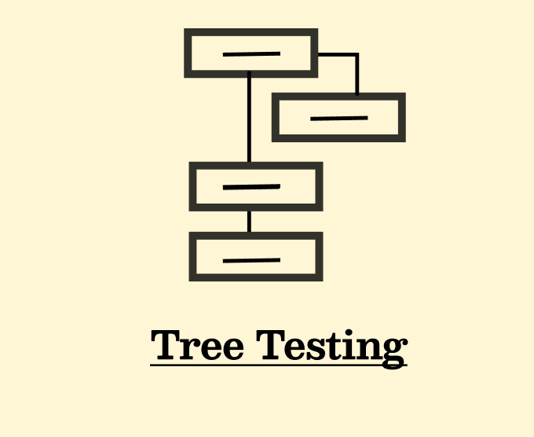
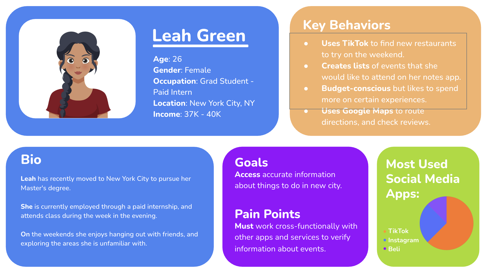
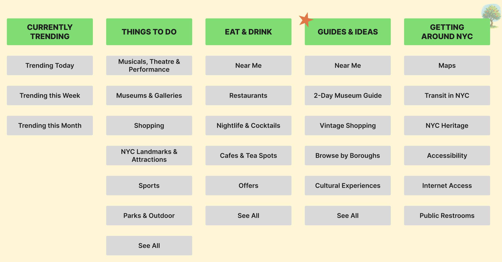
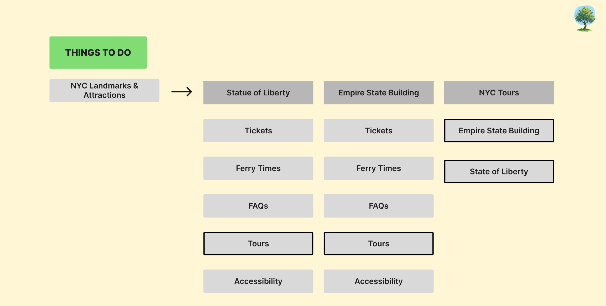

Our team was tasked with revamping the NYC Tourism Website. Our goal was to underdstand how users who were new to the city were able to naviagte the website when exploring their new environment. Our goal was was to make it easier for them to call New York home.



We found that users like to find things to do in the city based on location and budget. Although budget plays a major role in decsion-making it does not dictate choice. Users will still pay good money depending on the experience.



We decided to update the filter option allowing users to find new locations and use reviews to source options. This functionality will allow users to move about the website more organically.